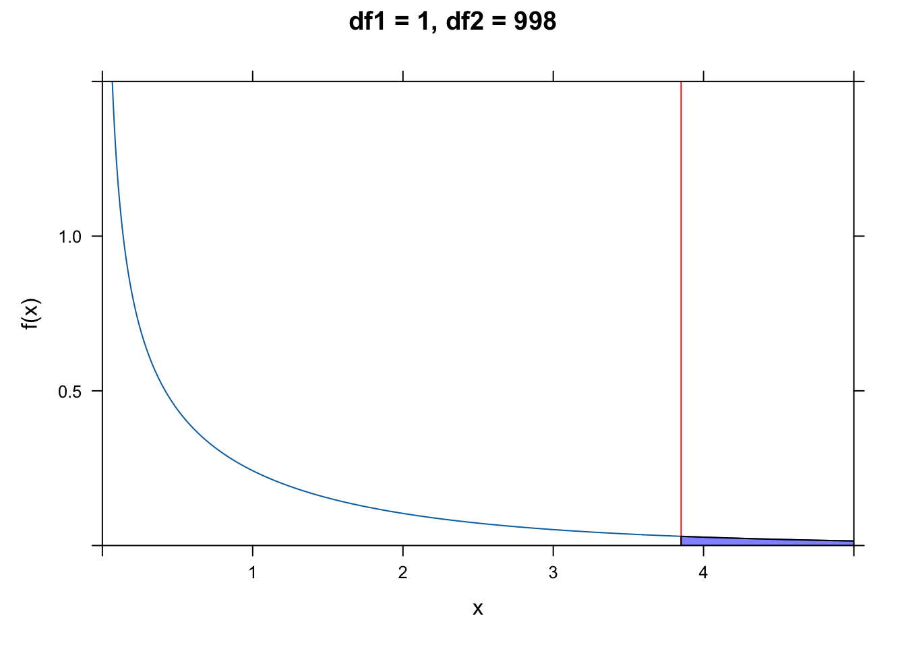

19 Elements of Regression Analysis
19.1 Objectives
The objective of this module is to continue our discussion of simple linear regression analysis to understand how the goal of regression is to partition variance in the response variable among different sources, i.e., into that explained by the regression model itself (and, we will see later on in our discussion of multivariate regression, among different factors in that model) versus the left-over error or residual variance. We also go through how to calculate the standard errors for our various regression coefficients and for the predicted values of our response variable based on our regression model, which, as we have seen, are returned by the
lm()function. Finally, we also briefly discuss ways to transform non-normally distributed data to make them more appropriate for analysis using linear regression.
19.2 Preliminaries
- Install the following package in R: {ggpubr}
- Load {tidyverse}, {mosiac}, {car}, {broom}
19.3 Analysis of Variance Tables
In our linear models, we can separate or “partition” the total variation in our y variable (the sum of squares of y, or \(SSY\)) into that explained by our model (the regression sum of squares, or \(SSR\)) and that which is left over as “error” (the error sum of squares, or \(SSE\)):
\[SSY = SSR + SSE\]
Graphically…
Let’s make sure we have our zombie apocalypse survivors dataset loaded…
f <- "https://raw.githubusercontent.com/difiore/ada-datasets/main/zombies.csv"
d <- read_csv(f, col_names = TRUE)Now, we run a straightforward bivariate regression model and, using the raw data (which are duplicated in the $model data structure within our model object), we will calculate the various sums of squares of our variables and identify the numbers of degrees of freedom associated with each source of variation. This allows us to generate the ANOVA table for our model, which is a summary of how variance is partitioned among different sources.
m <- lm(data = d, height ~ weight)
# height - mean(height)
SSY <- sum((m$model$height - mean(m$model$height))^2)
SSY## [1] 18558.61# predicted height - mean height
SSR <- sum((m$fitted.values - mean(m$model$height))^2)
SSR## [1] 12864.82# height - predicted height
SSE <- sum((m$model$height - m$fitted.values)^2)
SSE## [1] 5693.785# or
SSE <- sum(m$residuals^2)
SSE## [1] 5693.785From here, we can calculate the variance in each of these components, typically referred to as the mean square, by dividing each sum of squares by its corresponding degrees of freedom (recall that a variance can be thought of as an average “sum of squares”).
The degrees of freedom for the regression sum of squares (\(SSR\)) is equal to the number of predictor variables (\(p\)), which in this case is one (given our regression equation, we need to know only one piece of information, the value of our predictor variable, in order to calculate the predicted value of the response variable). The number of degrees of freedom for the error sum of squares (\(SSE\)) is equal to \(n-2\) (or \(n - p - 1\)). This is because we need to estimate two parameters (\(\beta_0\) and \(\beta_1\)) from our data before we can calculate the error sum of squares. Finally, the number of degrees of freedom for the total sum of squares (\(SSY\)) is \(n-1\)… we need to estimate one parameter from our data (the mean value of y) before we can calculate \(SSY\).
(df_regression <- 1) # p = 1## [1] 1(df_error <- nrow(d) - df_regression - 1) # n - p - 1## [1] 998(df_y <- nrow(d) - df_regression) # n - p## [1] 999MSR <- SSR/df_regression # mean variance explained by the regression equation
MSE <- SSE/df_error # mean remaining variance
MSY <- SSY/df_y # mean overall varianceThe last item we need to calculate is the F ratio, the ratio of the variance explained by the regression model to the remaining, unexplained variance: \(MSR/MSE\).
fratio <- MSR/MSE
fratio## [1] 2254.931Together, the values we have calculated above form the main entries in the ANOVA Table for our regression.
| Source | Sum of Squares | Degrees of Freedom | Mean Square (SS/df) | F ratio |
|---|---|---|---|---|
| Regression | \(SSR\) = 12864.82 | 1 | \(MSR\) = 12864.82 | 2254.139 |
| Error | \(SSE\) = 5693.79 | \(n-2\) = 998 | \(MSE\) = 5.7072 | |
| Total | \(SSY\) = 18558.61 | \(n-1\) = 999 | \(MSY\) = 18.57719 |
We can then test the overall significance of our regression model by evaluating our F ratio test statistic against an \(F\) distribution, taking into account the number of degrees of freedom in each. The \(F\) distribution is a continuous probability distribution, defined for \(x≥0\) and governed by two parameters, \(df1\) and \(df2\). The critical value for the \(F\) statistic above which we would reject the idea that the variance in our two sources is comparable is given by qf(p, df1, df2), where p is 1-\(\alpha\) and df1 and df2 are the degrees of freedom in the sources being compared (regression versus error).
plotDist("f", df1 = 1, df2 = 10, col = "green", lty = 3, lwd = 2, main = "Some Example F Distributions",
sub = "red vertical line shows critical value\n
for df1=1, df2=998",
ylab = "f(x)", xlab = "x", xlim = c(0, 5), ylim = c(0, 1.5), key = list(space = "right",
text = list(c("df1=1, df2=1", "df1=2, df2=2", "df1=4, df2=4", "df1=8, df2=100",
"df1=1, df2=998")), lines = list(col = c("green", "blue", "red", "purple",
"black"), lty = c(3, 3, 3, 3, 1), lwd = 2, bty = "n", cex = 0.75)))
plotDist("f", df1 = 2, df2 = 2, col = "blue", lty = 3, lwd = 2, add = TRUE)
plotDist("f", df1 = 4, df2 = 4, col = "red", lty = 3, lwd = 2, add = TRUE)
plotDist("f", df1 = 8, df2 = 100, col = "purple", lty = 3, lwd = 2, add = TRUE)
plotDist("f", df1 = 1, df2 = 998, col = "black", lty = 1, lwd = 2, add = TRUE)
crit <- qf(p = 0.95, df1 = 1, df2 = 998)
crit## [1] 3.850793ladd(panel.abline(v = crit, col = "red", lty = 1, lwd = 1))The qf() function allows us to calculate critical values under an \(F\) distribution given the number of degrees of freedom for the regression and error.
plotDist("f", df1 = 1, df2 = 998, main = "df1 = 1, df2 = 998", xlab = "x", ylab = "f(x)",
xlim = c(0, 5), ylim = c(0, 1.5))
crit <- qf(p = 0.95, df1 = 1, df2 = 998)
crit## [1] 3.850793ladd(panel.abline(v = crit, col = "red", lty = 1, lwd = 1))
ladd(panel.polygon(cbind(c(crit, seq(from = crit, to = 12, length.out = 1000), 12),
c(0, df(seq(from = crit, to = 12, length.out = 1000), df1 = 1, df2 = 998), 0)),
border = "black", col = rgb(0, 0, 1, 0.5)))
For our data, the value for the F ratio statistic well exceeds this critical value!
Alternatively, we can use the following formulation to directly estimate a p value associated with our value for the F statistic. The p value is simply the area under the \(F\) distribution curve to the right of the F statistic value (or 1 minus the cumulative probability up to that point):
pf(q = fratio, df1 = 1, df2 = 998, lower.tail = FALSE)## [1] 2.646279e-258# or
1 - pf(q = fratio, df1 = 1, df2 = 998)## [1] 0… and we see that the p value associated with this high of an F statistic is infintessimally small.
As usual, R can handle all of the calculations above for easily. The aov() function, like the lm() function, returns a model object that we can use summary() on to look at the results we want. Alternatively, we can run the function summary.aov() using the model object resulting from lm() as an argument. In either case, the results returned are the same as we calculated by hand above.
a <- aov(data = d, height ~ weight)
summary(a)## Df Sum Sq Mean Sq F value Pr(>F)
## weight 1 12865 12865 2255 <2e-16 ***
## Residuals 998 5694 6
## ---
## Signif. codes: 0 '***' 0.001 '**' 0.01 '*' 0.05 '.' 0.1 ' ' 1summary.aov(m)## Df Sum Sq Mean Sq F value Pr(>F)
## weight 1 12865 12865 2255 <2e-16 ***
## Residuals 998 5694 6
## ---
## Signif. codes: 0 '***' 0.001 '**' 0.01 '*' 0.05 '.' 0.1 ' ' 1Recall that the results returned by summary() of our regression model also shows the coefficient of determination, or the “R-squared value”, which we defined above as the fraction of the total variation explained by the model. We can calculate this value directly from our ANOVA table as simply \(SSR/SSY\). The correlation coefficient, \(\rho\), between our response and predictor variable is simply the square root of this value.
rsq <- SSR/SSY
rsq## [1] 0.6931998rho <- sqrt(rsq)
rho## [1] 0.832586219.4 Standard Errors of Coefficients
Recall that lm() returned the standard errors associated with each of the various components of our regression model, i.e., the slope and intercept and each predicted value of y. We can calculate standard errors directly to show how R is deriving them.
The formula for the standard error of the regression slope, \(\beta_1\), is calculated as:
\[SE_{\beta_1} = \sqrt{\frac{MSE}{SSX}}\]
Using our data…
SSX <- sum((m$model$weight - mean(m$model$weight))^2) # how much x variation there is
SEbeta1 <- sqrt(MSE/SSX)
SEbeta1## [1] 0.004106858The standard error of the intercept, \(\beta_0\), is calculated as:
\[SE_{\beta_0} = \sqrt{\frac{MSE \times \sum{x^2}}{n \times SSX}} = SE_{\beta_1} \times \sqrt{\frac{\sum{x^2}}{n}} \]
SEbeta0 <- sqrt((MSE * sum(m$model$weight^2))/(1000 * SSX))
SEbeta0## [1] 0.5958147Finally, the standard error of each predicted value of y is calculated as:
\[SE_{\hat{y}} = \sqrt{MSE \times {\biggl[\frac{1}{n} + \frac{(x-\hat{x})^2}{SSX}}{\biggr]}}\]
SEyhat <- sqrt(MSE * (1/1000 + (m$model$weight - mean(m$model$weight))^2/SSX))
head(SEyhat) # just the first 6 rows## [1] 0.08978724 0.07620966 0.08414480 0.09533986 0.08904151 0.08341218These same standard errors for \(\beta_0\) and \(\beta_1\) are exactly what are returned by the lm() function.
summary(m)##
## Call:
## lm(formula = height ~ weight, data = d)
##
## Residuals:
## Min 1Q Median 3Q Max
## -7.1519 -1.5206 -0.0535 1.5167 9.4439
##
## Coefficients:
## Estimate Std. Error t value Pr(>|t|)
## (Intercept) 39.565446 0.595815 66.41 <2e-16 ***
## weight 0.195019 0.004107 47.49 <2e-16 ***
## ---
## Signif. codes: 0 '***' 0.001 '**' 0.01 '*' 0.05 '.' 0.1 ' ' 1
##
## Residual standard error: 2.389 on 998 degrees of freedom
## Multiple R-squared: 0.6932, Adjusted R-squared: 0.6929
## F-statistic: 2255 on 1 and 998 DF, p-value: < 2.2e-16Note that the t statistic is calculated as simply the estimate value divided by the corresponding SE value, and the p value just comes from comparing that statistic to a \(t\) distribution with the appropriate degrees of freedom (i.e., number of observations - 2). We can run another model with higher p values to see this. Here, too, we use the convenient tidy() function from the {broom} package to pull out a table of results from our linear model very easily.
m <- lm(zombies_killed ~ age, data = d)
coefficients <- tidy(m)
coefficients <- coefficients |>
mutate(t.calc = estimate/std.error)
coefficients <- coefficients |>
mutate(p.calc = 2 * (1 - pt(abs(t.calc), df = nrow(m$model) - 2)))
# the p value is 2 times the tail probability implied by the t statistic
coefficients## # A tibble: 2 × 7
## term estimate std.error statistic p.value t.calc p.calc
## <chr> <dbl> <dbl> <dbl> <dbl> <dbl> <dbl>
## 1 (Intercept) 3.01 0.378 7.97 4.35e-15 7.97 4.44e-15
## 2 age -0.00111 0.0187 -0.0596 9.53e- 1 -0.0596 9.53e- 119.5 Model Checking
So far, we’ve derived a bunch of summary statistics describing our model and we have looked at parametric ways of testing whether those summary statistics are significantly different from zero. That is…
- We have seen whether our overall regression model explains a significant portion of the variance in y by means of the F ratio test.
- We have calculated standard errors for our \(\beta_1\) and \(\beta_0\) estimates and seen whether they are significantly different from zero by means of t tests.
- We have calculated standard errors for our prediction of y (i.e., \(\hat{y}\)) at each value of x.
- We have estimated the proportion of the total variance in y explained by our model (i.e., \(R-squared\)).
What we have not done yet, however, is checked our model fit critically in other ways… particularly, we have not checked whether two key assumptions of linear modeling are met: that our residuals (or errors) are normally distributed and that there is constancy of variance in our y values across the range of xs (or, “homoscedasticity”).
We can investigate our residuals as one way of assessing model fit.
CHALLENGE
Calculate the residuals from the regression of zombie apocalypse survivor height on weight and plot these in relation to weight (as the x variable). There are lots of ways to do this quickly.
Show Code
m <- lm(data = d, height ~ weight)
e <- m$residuals
plot(x = d$weight, y = e)Show Code
# or we could use the function `resid()`
e <- resid(m)
plot(x = d$weight, y = e)Now, plot a histogram of your residuals… ideally they are normally distributed!
Show Code
histogram(e, xlim = c(-4 * sd(e), 4 * sd(e)), breaks = 20, main = "Histogram of Residuals")
An additional way to quickly examine your residuals is to use the plot() function with your model as an argument. This prints out four plots that each tell you something.
par(mfrow = c(2, 2))
plot(m)The first (top left) plot of “Residuals vs Fitted” values of y should, like the plot residuals versus x, not show any structure. We hope to see equally spread residuals around a horizontal line without distinct patterns.
The second (top right) plot is “Normal Q-Q” plot of theoretical quantiles versus standardized quantiles for the residual values. These should fall on roughly a straight line if the residuals are normally distributed.
The third (bottom left) plot (“Scale-Location”) is similar to the first, but graphs the square root of the standardized residuals versus fitted values of y and shows whether or the magnitude of residuals differs across the fitted values of y. Again, it is good if you see a horizontal line with equally spread points rather than a decrease or increase in spread across the range of fitted ys, which would indicate that the error variance increases or decreases across the relationship between y and x in your model.
The fourth (bottom right) plot (“Residuals vs. Leverage”) highlights whether there are any particular observations with disproportionate influence on the model. In particular, we look to see if there are cases that fall in the upper or lower right portion of the plot.
We can also do a QQ plot of our residuals…
qqnorm(m$residuals)
qqline(m$residuals)Perhaps more helpful QQ plots can be found in the {car} and {ggpubr} package. The functions qqPlot() and ggqqplot() provides a trend line and confidence intervals that allow us to see exactly which points make the sample fall outside of normality (if any). Let’s take a look:
qqPlot(m, distribution = "norm", id = FALSE) # qqPlot from {car}# `id=FALSE` means that outlier observations will not be labelled
library(ggpubr)
ggqqplot(m$residuals)detach(package:ggpubr)Finally, there are a number of tests for normality that we can run within the R framework and using other packages. A Shapiro-Wilk Normality Test is perhaps the most widely used, where a low p value would indicate deviation from normality (technically, a measure of how far the trend line of the residuals deviates from the Q-Q plot line).
(s <- shapiro.test(m$residuals))##
## Shapiro-Wilk normality test
##
## data: m$residuals
## W = 0.99713, p-value = 0.07041As you can see, although there are some points at the higher quantiles that suggest non-normality, the Shapiro-Wilk test suggests that it is not quite non-normal, so our use of parametric statistics should be okay.
Some other popular tests for normality, and the cases in which they are best used, are listed below:
Anderson-Darling test from the {nortest} package
- Very popular, not quite as powerful as Shapiro-Wilk
- Best used when \(n\) ≥ 8
nortest:: ad.test()
Martinez-Iglewicz test from the {PoweR} package
- Tests for dispersion from the median
- Very powerful for heavy-tailed distributions
- Best with small sample sizes (\(n\) ≥ 3)
PoweR::stat0032.MartinezIglewicz()
Kolmogorov-Smirnov test (with Lilliefors adjustment) from the {nortest} package
- Not as good as Anderson-Darling, but historically popular
- Requires that \(n\) ≥ 4.
nortest::lillie.test()
D-Agostino Omnibus test (based on assessment of skew and kurtosis) from the {fBasics} package
- Robust against identical values in distribution
- Skewness test requires \(n\) ≥ 8
- Kurtosis test requires \(n\) ≥ 20
fBasics::dagoTest()
For a good discussion/demonstration of the relative power of each of these tests (meaning the probability that the test will correctly reject the null hypothesis) at different sample sizes, check out this link or this pdf, especially the tables on pages 670-8 and 670-9 and the plots on 670-10. This can help you better understand which test is best for a given sample size, and how much faith to put in these tests given your sample!
CHALLENGE
Load in the “KamilarAndCooper.csv” dataset and develop a linear model to look at the relationship between “weaning age” and “female body mass”. You will probably need to look at the data and variable names again to find the appropriate variables to examine.
f <- "https://raw.githubusercontent.com/difiore/ada-datasets/main/KamilarAndCooperData.csv"
d <- read_csv(f, col_names = TRUE)
names(d)## [1] "Scientific_Name" "Family"
## [3] "Genus" "Species"
## [5] "Brain_Size_Species_Mean" "Brain_Size_Female_Mean"
## [7] "Brain_size_Ref" "Body_mass_male_mean"
## [9] "Body_mass_female_mean" "Mass_Dimorphism"
## [11] "Mass_Ref" "MeanGroupSize"
## [13] "AdultMales" "AdultFemale"
## [15] "AdultSexRatio" "Social_Organization_Ref"
## [17] "InterbirthInterval_d" "Gestation"
## [19] "WeaningAge_d" "MaxLongevity_m"
## [21] "LitterSz" "Life_History_Ref"
## [23] "GR_MidRangeLat_dd" "Precip_Mean_mm"
## [25] "Temp_Mean_degC" "AET_Mean_mm"
## [27] "PET_Mean_mm" "Climate_Ref"
## [29] "HomeRange_km2" "HomeRangeRef"
## [31] "DayLength_km" "DayLengthRef"
## [33] "Territoriality" "Fruit"
## [35] "Leaves" "Fauna"
## [37] "DietRef1" "Canine_Dimorphism"
## [39] "Canine_Dimorphism_Ref" "Feed"
## [41] "Move" "Rest"
## [43] "Social" "Activity_Budget_Ref"d <- select(d, WeaningAge = "WeaningAge_d", FemaleBodyMass = "Body_mass_female_mean")
# keep select columns
d <- na.omit(d) # get rid of NAs
ggplot(data = d, aes(x = FemaleBodyMass, y = WeaningAge)) + geom_point() + geom_smooth(method = "lm")- Using the procedures outlined above and in Module 18, calculate estimates of \(\beta_0\) and \(\beta_1\) by hand and by using the
lm()function. Are the regression coefficients estimated under a simple linear model statistically significantly different from zero?
Show Code
# by hand
beta1 <- cor(d$FemaleBodyMass, d$WeaningAge) * (sd(d$WeaningAge)/sd(d$FemaleBodyMass))
beta1## [1] 0.02012737Show Code
beta0 <- mean(d$WeaningAge) - beta1 * mean(d$FemaleBodyMass)
beta0## [1] 201.634Show Code
# using lm()
m <- lm(data = d, WeaningAge ~ FemaleBodyMass)- Construct an ANOVA table by hand and compare your values to the results of running
lm()and then looking atsummary.aov(lm()).
# by hand
SSY <- sum((m$model$WeaningAge - mean(m$model$WeaningAge))^2)
SSR <- sum((m$fitted.values - mean(m$model$WeaningAge))^2)
SSE <- sum((m$model$WeaningAge - m$fitted.values)^2)
DFR <- 1
DFE <- nrow(d) - DFR - 1
DFY <- nrow(d) - DFR
MSR <- SSR/DFR
MSE <- SSE/DFE
MSY <- SSY/DFY
fratio <- MSR/MSE
p <- 1 - pf(q = fratio, df1 = DFR, df2 = DFE)
(aov_table <- tibble(Source = c("Regression", "Error", "Total"), df = c(DFR, DFE,
DFY), `Sum Sq` = c(SSR, SSE, SSY), `Mean Sq` = c(MSR, MSE, MSY), `F value` = c(fratio,
NA, NA), p = c(p, NA, NA)))## # A tibble: 3 × 6
## Source df `Sum Sq` `Mean Sq` `F value` p
## <chr> <dbl> <dbl> <dbl> <dbl> <dbl>
## 1 Regression 1 3668116. 3668116. 109. 0
## 2 Error 114 3833822. 33630. NA NA
## 3 Total 115 7501938. 65234. NA NA# using summary.aov()
summary.aov(m)## Df Sum Sq Mean Sq F value Pr(>F)
## FemaleBodyMass 1 3668116 3668116 109.1 <2e-16 ***
## Residuals 114 3833822 33630
## ---
## Signif. codes: 0 '***' 0.001 '**' 0.01 '*' 0.05 '.' 0.1 ' ' 1- Generate the residuals for your linear model, plot them in relation to female body mass, and make a histogram of the residuals. Do they appear to be normally distributed?
Show Code
residuals <- m$residuals
plot(residuals ~ d$FemaleBodyMass, xlab = "Female Body Mass", ylab = "Residuals")Show Code
hist(residuals, breaks = 20, main = "Histogram of Residuals")- Run the
plot()command on the result oflm()and examine the 4 plots produced.
Show Code
par(mfrow = c(2, 2))
plot(m)Again, based on examination of the residuals and the results of Shapiro-Wilks test, does it look like your model has good fit?
Show Code
par(mfrow = c(1, 1))
qqnorm(m$residuals)
qqline(m$residuals)Show Code
(s <- shapiro.test(m$residuals))##
## Shapiro-Wilk normality test
##
## data: m$residuals
## W = 0.86291, p-value = 5.825e-0919.6 Data Transformations
Recall, again, that for linear regression modeling to be appropriate, two important conditions need to be met: [1] our variables (and the error variance in our variables) should be approximately normally distributed and [2] there should be homogeneity of variance (“homoscedasticity”) in our response variable around the range of our predictor variable.
In many cases, these conditions may not be met… for example, the continuous metric data we have may not, in fact, be normally distributed. Nonetheless, we can sometimes apply some kind of mathematical transformation to our data to change their distribution to more closely approximate the normal.
The logarithmic or “log” transformation (where we take the log value of each data point) is often applied to positive numeric variables with heavy skew to dramatically reduce the overall range of the data and bring extreme observations closer to a measure of centrality. The logarithm for a number is the power to which you must raise a base value (e.g., \(e\), the natural log) in order to obtain that number. This is an example of a “power transformation”, other examples of which include the square root transformation and the reciprocal (or multiplicative inverse) transformation.
CHALLENGE
Return to the original “KamilarAndCooper.csv” dataset you were looking at above, log() transform both of your variables, and then run a simple, bivariate linear model.
Do you notice a difference between these results and those obtained using untransformed variables?
f <- "https://raw.githubusercontent.com/difiore/ada-datasets/main/KamilarAndCooperData.csv"
d <- read_csv(f, col_names = TRUE)
names(d)## [1] "Scientific_Name" "Family"
## [3] "Genus" "Species"
## [5] "Brain_Size_Species_Mean" "Brain_Size_Female_Mean"
## [7] "Brain_size_Ref" "Body_mass_male_mean"
## [9] "Body_mass_female_mean" "Mass_Dimorphism"
## [11] "Mass_Ref" "MeanGroupSize"
## [13] "AdultMales" "AdultFemale"
## [15] "AdultSexRatio" "Social_Organization_Ref"
## [17] "InterbirthInterval_d" "Gestation"
## [19] "WeaningAge_d" "MaxLongevity_m"
## [21] "LitterSz" "Life_History_Ref"
## [23] "GR_MidRangeLat_dd" "Precip_Mean_mm"
## [25] "Temp_Mean_degC" "AET_Mean_mm"
## [27] "PET_Mean_mm" "Climate_Ref"
## [29] "HomeRange_km2" "HomeRangeRef"
## [31] "DayLength_km" "DayLengthRef"
## [33] "Territoriality" "Fruit"
## [35] "Leaves" "Fauna"
## [37] "DietRef1" "Canine_Dimorphism"
## [39] "Canine_Dimorphism_Ref" "Feed"
## [41] "Move" "Rest"
## [43] "Social" "Activity_Budget_Ref"# keep select columns
d <- select(d, WeaningAge = "WeaningAge_d", FemaleBodyMass = "Body_mass_female_mean")
d <- na.omit(d) # get rid of NAs
d$logWeaningAge <- log(d$WeaningAge)
d$logFemaleBodyMass <- log(d$FemaleBodyMass)
ggplot(data = d, aes(x = logFemaleBodyMass, y = logWeaningAge)) + geom_point() +
geom_smooth(method = "lm")# or plot(data=d, logWeaningAge ~ logFemaleBodyMass)
m <- lm(data = d, logWeaningAge ~ logFemaleBodyMass)
summary(m)##
## Call:
## lm(formula = logWeaningAge ~ logFemaleBodyMass, data = d)
##
## Residuals:
## Min 1Q Median 3Q Max
## -1.10639 -0.32736 0.00848 0.32214 1.11010
##
## Coefficients:
## Estimate Std. Error t value Pr(>|t|)
## (Intercept) 1.7590 0.2196 8.011 1.08e-12 ***
## logFemaleBodyMass 0.4721 0.0278 16.983 < 2e-16 ***
## ---
## Signif. codes: 0 '***' 0.001 '**' 0.01 '*' 0.05 '.' 0.1 ' ' 1
##
## Residual standard error: 0.4532 on 114 degrees of freedom
## Multiple R-squared: 0.7167, Adjusted R-squared: 0.7142
## F-statistic: 288.4 on 1 and 114 DF, p-value: < 2.2e-16par(mfrow = c(2, 2))
plot(m)
par(mfrow = c(1, 1))
qqPlot(m$residuals) ## qqPlot from {car}## [1] 24 116(s <- shapiro.test(m$residuals))##
## Shapiro-Wilk normality test
##
## data: m$residuals
## W = 0.99367, p-value = 0.8793The following chart and graphs shows some other common numerical transformations that are often useful for changing a variable’s distribution to more closely approximate the normal.
par(mfrow = c(1, 2))
a <- 2
b <- 2
# LOG X
x <- seq(from = 0, to = 100, length.out = 1000)
y <- a + b * log(x)
plot(x, y, type = "l", main = "untransformed")
plot(log(x), y, type = "l", main = "log(x)")# LOG Y - a log transformation for the response variable is useful when the
# variance in the explanatory variable is not consistent across the range of
# explanatory variable values
x <- seq(from = 0, to = 10, length.out = 1000)
y <- exp(a + b * x)
plot(x, y, type = "l", main = "untransformed")
plot(x, log(y), type = "l", main = "log(y)")# ASYMPTOTIC
x <- seq(from = 1, to = 100, length.out = 100)
y <- (a * x)/(1 + b * x)
plot(x, y, type = "l", main = "untransformed")
plot(1/x, y, type = "l", main = "1/x")# RECIPROCAL
x <- seq(from = 1, to = 100, length.out = 100)
y <- a + b/x
plot(x, y, type = "l", main = "untransformed")
plot(1/x, y, type = "l", main = "1/x")# POWER - a power transformation for the explanatory variable is useful # if
# there is a curvilinear relationship between the explanatory variable and the
# response variable
x <- seq(from = 1, to = 100, length.out = 100)
y <- a * x^b
plot(x, y, type = "l", main = "untransformed")
plot(x^b, y, type = "l", main = "x^b")# EXPONENTIAL
x <- seq(from = 1, to = 10, length.out = 100)
y <- a * exp(b * x)
plot(x, y, type = "l", main = "untransformed")
plot(x, log(y), type = "l", main = "log(y)")Applying a function to transform a complete dataset is the most common way of attempting to squeeze your data into matching a normal distribution so that you can use parametric statistics. This is a very common practice, and much has been written on this topic, including its drawbacks.
For a good discussion on common transformations, see R in Action Chapter 8.5 (“Corrective Measures”), and please do note the section titled A caution concerning transformations. When trying out transformations, keep your normalization tests handy so that you can retest the transformed data and see if the transformation achieved its intended purpose.
Concept Review
- Regression analysis partitions the variance in a response variable into components associated with the various predictor variables plus an “error” component, or residual
- The significance of the overall regression model, and of individual predictors, is evaluated by comparing F ratios (the ratio of the variance explained by the predictor to the unexplained variance) against an F distribution, taking into account the number of degrees of freedom in each
- After running a model, we need to confirm that key assumptions for linear regression are met, including that residuals are normally distributed and observations show homogeneity of variance across the range of predictor values
- If these assumptions are not met, data transformation of the raw variables may sometimes be helpful